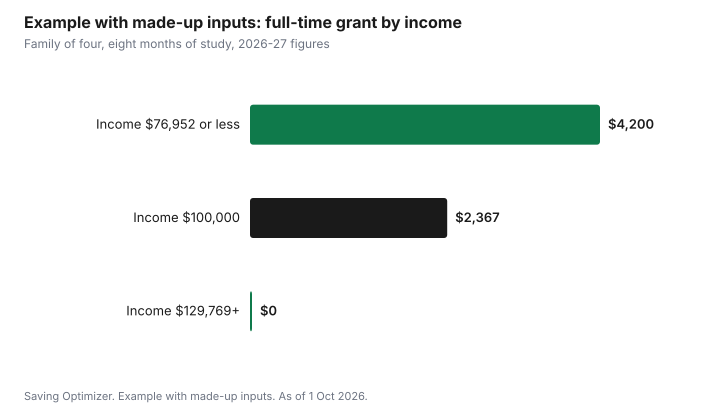

Education · Canada
Canada Student Grant 2026-27: Up to $4,200 a Year, Income Thresholds and What Ends in July 2027
In 2026-27, the Canada Student Grant for Full-Time Students pays up to $525 for each month of study, or $4,200 over a typical eight-month school year, as of 1 October 2026. The full amount goes to students whose family income is at or below a threshold that depends on family size, such as $76,952 for a family of four, and the grant phases out to nothing at about $129,769 for that family. The higher amounts were extended for one year and end on 31 July 2027 unless Ottawa extends them again. Students in most of Canada apply once, through their provincial or territorial student aid program, and are assessed for federal and provincial aid together.
Key takeaways
- Full-time grant: up to $525 per month of study, up to $4,200 over eight months, for 2026-27.
- Full grant at or below the threshold for your family size; for a family of four, $76,952. It phases out to zero at about $129,769.
- Other grants: $2,520 for part-time students, $2,800 for students with disabilities, $280 per dependant per month for full-time students with dependants.
- Federal full-time loans: up to $300 a week, interest-free.
- The higher amounts end on 31 July 2027 unless extended. Without an extension, the full-time grant would return to its 2019-20 level.
- Apply through your province's student aid program; Quebec, the Northwest Territories and Nunavut run their own programs.
How much the grants pay in 2026-27
The amounts are set in regulations published in the Canada Gazette on 1 July 2026, in force from 1 August 2026:
| Grant | 2026-27 maximum |
|---|---|
| Full-Time Students | $525 per month of study (up to $4,200 over eight months) |
| Part-Time Students | $2,520 per academic year |
| Students with Disabilities | $2,800 per academic year |
| Full-Time Students with Dependants | $280 per dependant per month of study |
| Part-Time Students with Dependants | $2,688 per academic year |
Students must have assessed financial need to receive federal aid. Grants are given first, and loans cover remaining need. The federal full-time loan limit is $300 a week for 2026-27, and federal student loans do not charge interest.
Family income thresholds
For the full-time grant, the full $525 a month goes to students whose family income is at or below the threshold for their family size. Above the threshold, the monthly grant is reduced by a set rate for each dollar of income above it, until it reaches zero. Using the published thresholds and phase-out rates, the cut-off points work out as follows:
| Family size | Full grant at or below | Monthly phase-out rate | Grant reaches zero at about |
|---|---|---|---|
| 1 | $38,474 | 0.01666 | $69,987 |
| 2 | $54,412 | 0.01204 | $98,017 |
| 3 | $66,641 | 0.01036 | $117,317 |
| 4 | $76,952 | 0.00994 | $129,769 |
| 5 | $86,033 | 0.00952 | $141,180 |
| 6 | $94,245 | 0.00910 | $151,937 |
| 7 or more | $101,797 | 0.00882 | $161,321 |
Family income means your parents' income if you are a dependent student, or your own and your spouse's income if you are independent. Your provincial student aid office decides which applies under its rules. Family size includes you and the people counted in your household.
How the phase-out works
The phase-out rate is applied to income above the threshold, per month. For a family of four, every $1,000 of income above $76,952 reduces the monthly grant by $9.94, or about $79.52 over eight months. For a single independent student, every $1,000 above $38,474 reduces the monthly grant by $16.66, or about $133.28 over eight months. The province applies the formula in your assessment, so treat these as estimates.
Example with made-up inputs: a family of four
The family income here is an example with made-up inputs; the threshold and rate are the published 2026-27 figures. A dependent student in a family of four has family income of $100,000 and studies full-time for eight months.
| Step | Amount |
|---|---|
| Family income (made-up) | $100,000 |
| Threshold, family of four | $76,952 |
| Income above threshold | $23,048 |
| Monthly reduction (× 0.00994) | $229.10 |
| Monthly grant ($525 − $229.10) | $295.90 |
| Eight-month grant | $2,367.20 |
At $76,952 or less, the same student would receive the full $4,200. At about $129,769 or more, the student would receive no full-time grant, though they could still qualify for federal loans if they have assessed need.

Part-time, dependant and disability grants
The part-time grant, up to $2,520 a year, uses the same income thresholds with an annual phase-out rate. Part-time students' need is based on their education costs only, not living costs. Students with dependants can receive $280 per dependant per month if full-time, or up to $2,688 a year if part-time, subject to income thresholds. The grant for students with disabilities, $2,800 a year, goes to students with a disability and assessed financial need, and there are separate supports for disability-related equipment and services; ask your student aid office.
What happens after 31 July 2027
Ottawa increased the grants by 40% above their 2019-20 levels in 2023-24 and has extended the increase each year since. The current regulations extend it to 31 July 2027, along with the $300 weekly loan limit. If it is not extended, grants and loans return to 2019-20 levels. For the full-time grant, a 40% increase that brought it to $525 a month means the 2019-20 level was $375 a month, or $3,000 over eight months. The weekly loan limit would return to $210. The federal government estimated that returning to those levels would mean about $2,300 less federal aid per student on average.
| Item | 2026-27 | If the increase lapses |
|---|---|---|
| Full-time grant, monthly | $525 | $375 |
| Full-time grant, eight months | $4,200 | $3,000 |
| Weekly loan limit | $300 | $210 |
Students and their families should budget for 2027-28 as if the lower amounts might apply, and treat any extension as a bonus.
How to apply
- Apply through your provincial or territorial student aid program: OSAP in Ontario, StudentAid BC, Alberta Student Aid and so on. One application covers federal and provincial aid.
- Students from Quebec, the Northwest Territories and Nunavut apply to their own programs, which receive federal payments to run their own aid.
- Apply early, ideally before classes start, so money arrives for tuition.
- Reapply every year. Grants are based on that year's income and need.
- Keep the documents your province asks for, such as tax returns, ready.
After school: repayment help
Federal student loans are interest-free. Borrowers with low income can qualify for the Repayment Assistance Plan, which can reduce payments to zero. In 2025-26, a single borrower with income below $45,456 owed no payment, with higher thresholds for larger families. Provincial portions have their own rules; in Ontario, the provincial portion charges interest at prime plus 1%.
| Step | Your numbers |
|---|---|
| Family size | |
| Family income | |
| Threshold for your family size | |
| Income above threshold | |
| Monthly reduction (income above × rate) | |
| Monthly grant ($525 − reduction, not below $0) | |
| Months of study | |
| Estimated grant |
Common mistakes
- Not applying because you think your family earns too much; for a family of four, part of the grant continues to about $129,769.
- Using last year's thresholds or amounts.
- Assuming the higher amounts are permanent.
- Applying late and waiting for money after tuition is due.
- Forgetting the dependant and disability grants.
Sources
- Canada Gazette Part II, SOR/2026-139, Regulations Amending the Canada Student Financial Assistance Regulations, registered 22 Jun 2026, published 1 Jul 2026, in force 1 Aug 2026. Grant amounts; income thresholds and phase-out rates (Tables 7 to 11); $300 weekly loan limit to 31 Jul 2027; 40% increase over 2019-20; $210 pre-pandemic loan limit; about $2,300 less aid if not extended; Repayment Assistance Plan threshold $45,456 for 2025-26.
- Government of Canada, Canada Student Grant for Full-Time Students (canada.ca), as of 1 Oct 2026. $4,200 per school year; $38,474 and $69,987 for a family of one.
- Government of Ontario, Pay back OSAP (ontario.ca), as of 1 Oct 2026. Ontario portion interest at prime plus 1%.
- The phase-out cut-off points are calculated from the published thresholds and rates. The $100,000 family income in the example is a made-up input.
Frequently asked questions
How much is the Canada Student Grant in 2026-27?
The Canada Student Grant for Full-Time Students pays up to $525 per month of study in 2026-27, or up to $4,200 over eight months. Part-time students can receive up to $2,520, students with disabilities $2,800, and full-time students with dependants $280 per dependant per month.
What is the income limit for the Canada Student Grant?
For full-time students in 2026-27, the full grant goes to families at or below thresholds such as $38,474 for one person and $76,952 for a family of four. The grant phases out above the threshold and reaches zero at about $69,987 for one person and $129,769 for a family of four.
Is the Canada Student Grant ending?
The higher grant amounts are extended to 31 July 2027. If they are not extended again, the full-time grant would return to its 2019-20 level of $375 a month, or $3,000 over eight months, and the weekly loan limit would return to $210.
How do I apply for the Canada Student Grant?
Apply through your provincial or territorial student aid program, such as OSAP in Ontario. One application covers federal and provincial aid. Students from Quebec, the Northwest Territories and Nunavut apply to their own programs.
Do I have to repay the Canada Student Grant?
No. Grants do not have to be repaid as long as you remain eligible, for example by staying enrolled as required. Canada Student Loans must be repaid but are interest-free.
Researched and drafted with AI assistance and fact-checked against official Canadian sources. How we create content.
Disclosure: Saving Optimizer may earn a commission if a partner link is added later, such as a student bank account offer type. No partnership with the Government of Canada or any provincial aid program is claimed on this page. Education only.